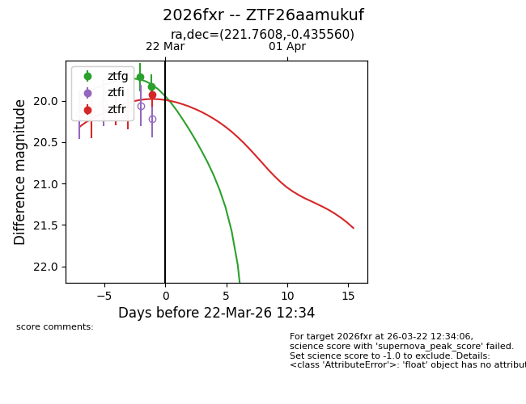
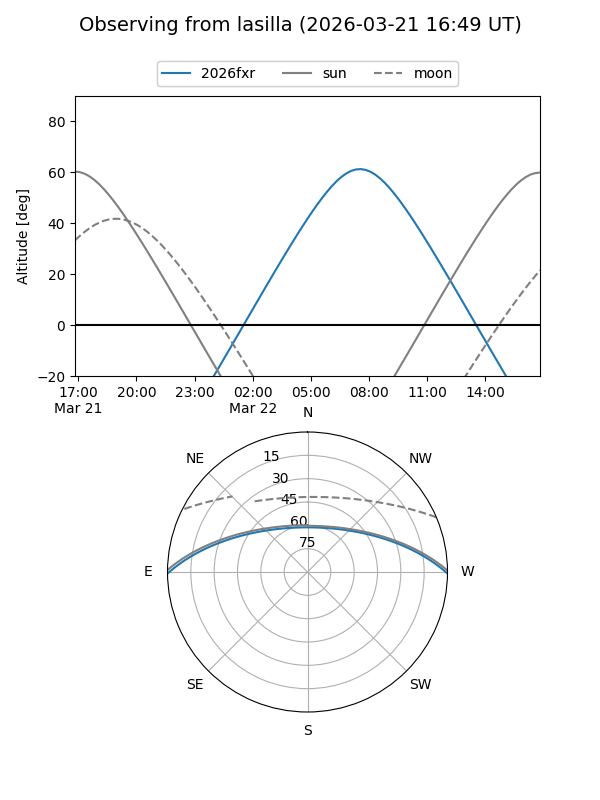
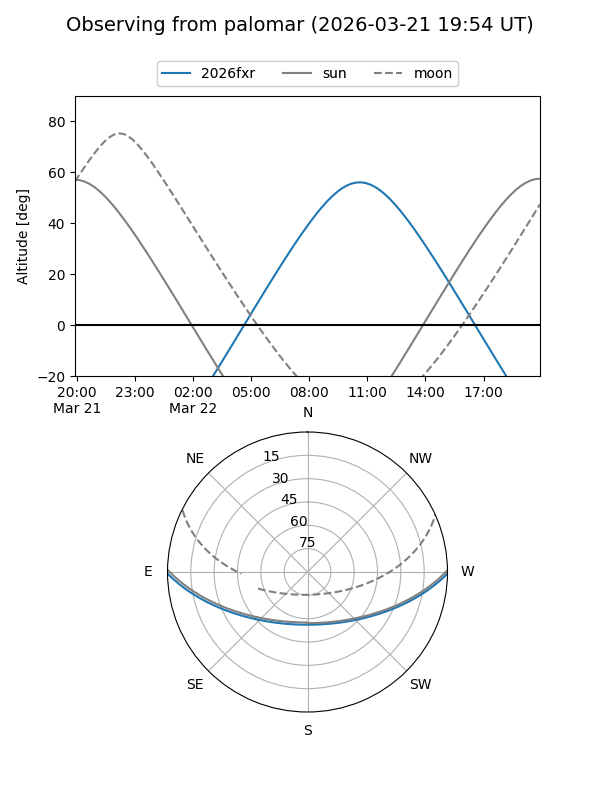
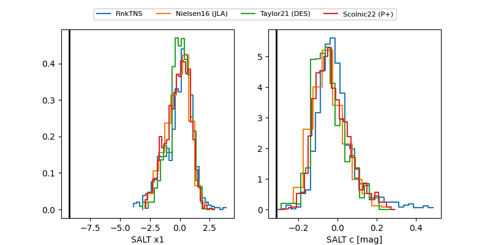

2026fxr
Target 2026fxr at 2026-03-22 12:36
Aliases and brokers:
FINK: link
Lasair: link
ALeRCE: link
TNS: link
YSE: link
alt names
ZTF26aamukuf (ztf,fink_ztf)
2026fxr (tns,yse)
Coordinates:
equatorial (ra, dec) = 221.7608,-0.43556
equatorial (HMS+DMS) = 14:47:02.58,-00:26:08.02
galactic (l, b) = (352.9027,+50.86440)
Flags:
Photometry:
last ztfg=19.82, ztfr=19.93
2 ztfg, 2 ztfr detections
Lightcurve

Visibility


Additional plots
